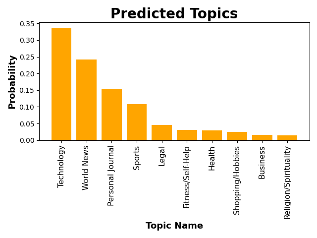
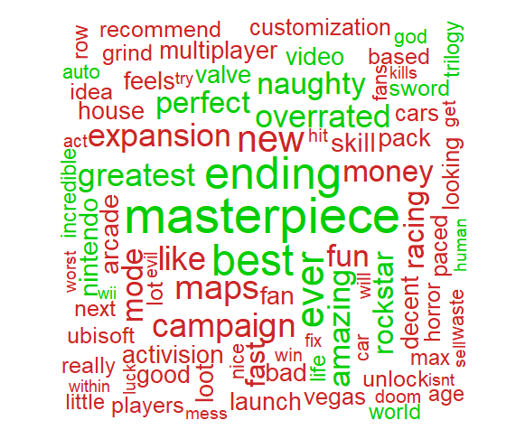
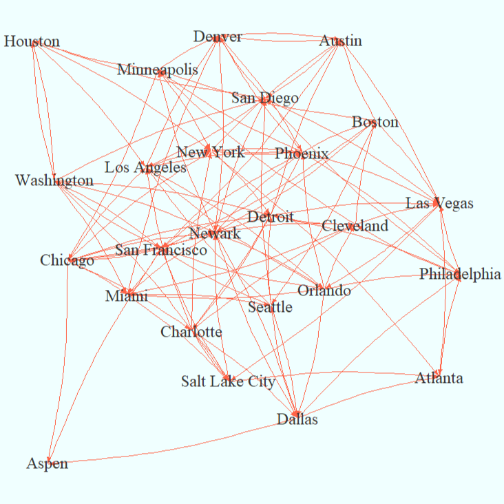
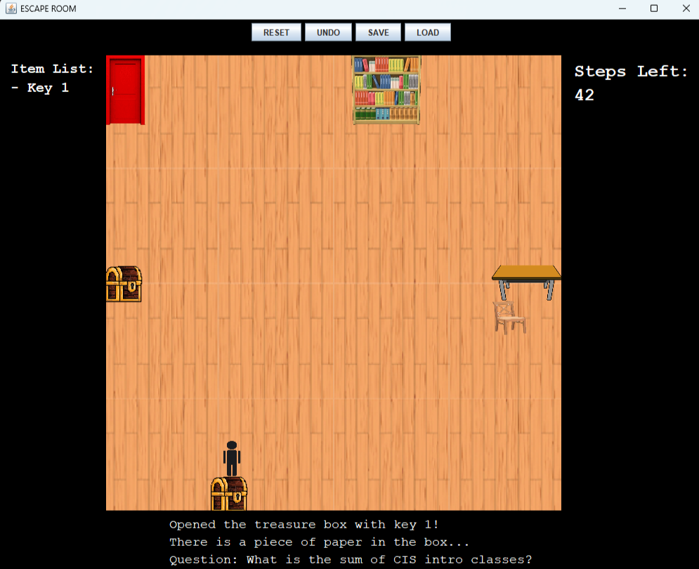
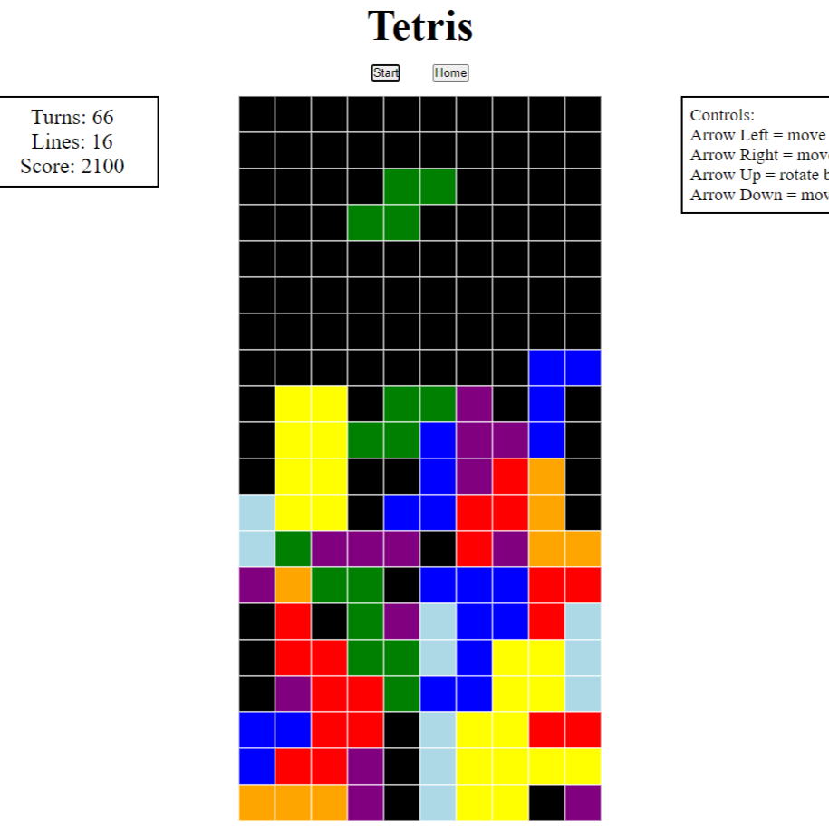

Quick Jump
Data Science
-

Podcast Topic Guesser
A predictive model which uses topic modeling (LDA) to predict what topic a podcast will be classified as based on its channel description. Utilized text preprocessing, word cloud, and topic modeling in Python against a Kaggle dataset with 13K podcast descriptions. (Python)
-

"Must Play" Game Predictor
A logisitic regression model which use Natural Language Processing (NLP) to predict whether a video game should be classifed as a "Must Play" game (METASCORE ≥ 90) based on its user reviews. Utilized text preprocesing, word cloud, and logistic regression in R against a Kaggle dataset with 5K game info and 284K user reviews.
Achieved a prediction accuracy of 65.52% on test data. (R)
Software/Web Development
-

Flightimizer
An application in Java that recommends users the fastest flight from a source to a desitination city using Dijkstra's algorithm. Constructed a directed graph from a Kaggle dataset with 578K flight data, where edges are weighted by elapsed flight time. (Java, Python, R)
-
Personal Website
My personal website to showcase my projects and development. (HTML, CSS)
Game Development
-

Escape Room
An Escape Room game where the player controls a character to solve mysteries and escape the room within a step count limit. Implemented using Java Swift. (Java)
-

Tetris
A Frontend Tetris game with essential game features such as block movements, rotation, deletion and keeping track of game stats. Click here to play game. (HTML, CSS, JavaScript)